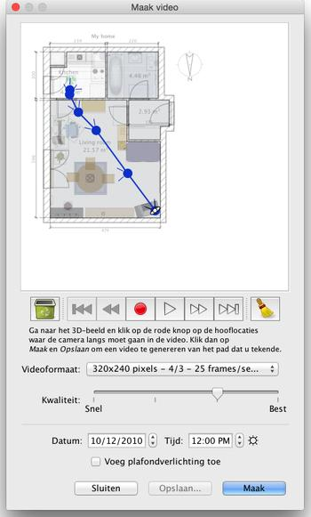

| Video's maken | |||
Om een 3D video van je huis te maken, kun je klikken op 3D beeld > Maak video... of klik op de Maak video knop.
Dan zal een dialoogvenster verschijnen, dat lijkt op dat van foto's maken.  Bovenin het venster is de plattegrond van uw huis te zien, waar het virtuele pad van de videocamera getekend zal worden.
Onder de plattegrond helpen de knoppen opnemen, afspelen en verwijderen om de punten op te nemen waar de camera langs moet gaan, het pad af te spelen of sommige punten te verwijderen. Om een video te maken, moet u de beginlocatie van de videocamera bepalen in het 3D beeld van het hoofdvenster van Sweet Home 3D en op de rode knop in het videovenster klikken. Ga dan in het 3D beeld naar de volgende locatie en klik opnieuw op de rode knop. Herhaal deze stappen voor iedere locatie waar de camera langs moet gaan in de video. |
|